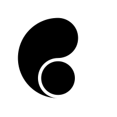
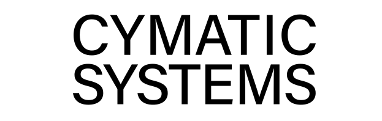

<!doctype html>
<html lang="en">
<head>
  <meta charset="utf-8">
  <meta name="viewport" content="width=device-width, initial-scale=1">
  <title>Cymatic Systems</title>
  <meta name="description" content="Cymatic Systems is a micro enterprise based in Dublin, Ireland that specializes in creating high-performance and scalable software systems. We take a research-based approach to solving technical problems and developing innovative solutions. Our expertise includes network protocols, game engines and cloud infrastructure, but we are not limited to these areas. We are always exploring new and innovative technologies, and we are excited to share our knowledge and experience with others.">
  <meta name="author" content="Cymatic Systems">
  <meta property="og:title" content="Cymatic Systems">
  <meta property="og:type" content="website">
  <meta property="og:url" content="https://cymatic.ie/">
  <meta property="og:description" content="Cymatic Systems is a micro enterprise based in Dublin, Ireland that specializes in creating high-performance and scalable software systems. We take a research-based approach to solving technical problems and developing innovative solutions. Our expertise includes network protocols, game engines and cloud infrastructure, but we are not limited to these areas. We are always exploring new and innovative technologies, and we are excited to share our knowledge and experience with others.">
  <meta property="og:image" content="logo.svg">
  <link rel="icon" href="favicon.svg" type="image/svg+xml">
  <style type="text/css">
    html {
      background-color: #090b16;
    }

    html,
    body {
      height: 100%;
      display: flex;
      align-items: center;
      justify-content: center;
      text-align: center;
    }

    .footer {
      font-size: small;
      color: #777777;
      text-align: center;
      font-family: Sans-Serif;
      position: absolute;
      bottom: 0;
      margin-bottom: 20px;
    }

    a {
      display: block;
      margin-top: 4em;
      margin-bottom: 4em;
      font-size: large;
      color: #222222;
    }

    canvas {
      width: 100vw;
      height: 100vh;
      z-index: -1;
      display: absolute;
      position: fixed;
      top: 0;
      left: 0;
    }

    #content {
      margin: .5em;
    }

    img {
      position: absolute;
      top: 50%;
      left: 50%;
      height: 200px;
      margin-top: -100px;
      margin-left: -100px;
    }

    .logo_text {
      margin-left: -10px;
    }

    @media screen and (max-width: 1280px) {
      img {
        position: relative;
        top: auto;
        left: auto;
        height: 200px;
        margin-top: auto;
        margin-left: auto;
      }

      .logo_text {
        width: 100%;
      }
    }
  </style>
</head>
<body>
  <script type="text/javascript" src="dat.gui.min.js"></script>
  <script src="https://twgljs.org/dist/5.x/twgl-full.min.js"></script>
  <canvas id="canvas"></canvas>
  <!-- <div>
    
    
  </div>
  <div class="footer">
    info@cymatic.ie
    <br>
    © CYMATIC SYSTEMS LIMITED 2022
  </div> -->
  <div id="gui"></div>
  <script type="text/javascript">
    const gui = new dat.GUI();
    const canvas = document.getElementById("canvas");
    const cfg = {
      width: 50,
      height: 50,
      spacing: 1,
      maxHeight: 10,
      lineColour: [255, 255, 255, 1.0],
      cameraPitch: 116,
      cameraYaw: 202,
      offsetX: -10,
      offsetY: -10,
      distance: -30,
      timeScale: 0.005,
      wavePosScale0: 0.001,
      waveOffset0: 0.1,
      waveScale0: 0.5,
      wavePosScale1: 0.001,
      waveOffset1: 0.2,
      waveScale1: 0.5,
      wavePosScale2: 0.001,
      waveOffset2: 0.3,
      waveScale2: 0.5,
    };
    gui.add(cfg, "width", 1.0, 200, 1);
    gui.add(cfg, "height", 1.0, 200, 1);
    gui.add(cfg, "spacing", 1, 10, 1);
    gui.add(cfg, "timeScale", 0.0000001, 0.02);
    gui.add(cfg, "wavePosScale0", 0.0000001, 0.1);
    gui.add(cfg, "waveOffset0", 0.0000001, 10);
    gui.add(cfg, "waveScale0", 0.0000001, 10);
    gui.add(cfg, "wavePosScale1", 0.0000001, 0.1);
    gui.add(cfg, "waveOffset1", 0.0000001, 10);
    gui.add(cfg, "waveScale1", 0.0000001, 10);
    gui.add(cfg, "wavePosScale2", 0.0000001, 0.1);
    gui.add(cfg, "waveOffset2", 0.0000001, 10);
    gui.add(cfg, "waveScale2", 0.0000001, 10);
    gui.addColor(cfg, "lineColour");

    
    function handleMouseMove(event) {
      if (event.buttons === 1) {
        cfg.cameraPitch += event.movementY / 4;
        cfg.cameraYaw += event.movementX / 4;
      } else if (event.buttons === 4) {
        cfg.offsetX += event.movementX / 4;
        cfg.offsetY -= event.movementY / 4;
      }
      else if (event.buttons === 4) {
        cfg.distance -= event.movementY;
      }
    }
    
    function handleMouseWheel(event) {
      cfg.distance -= event.deltaY / 20;
    }

    canvas.addEventListener('wheel', handleMouseWheel);
    canvas.addEventListener('mousemove', handleMouseMove);

    function makeViewMatrix() {
      const orbitRadius = cfg.orbitDistance;
      const cameraPitch = cfg.cameraPitch * Math.PI / 180; // Convert to radians
      const cameraYaw = cfg.cameraYaw * Math.PI / 180; // Convert to radians

      // Calculate the camera's position relative to the target point
      const eye = [
        cfg.offsetX + Math.sin(cameraYaw) * Math.cos(cameraPitch),
        cfg.offsetY + Math.sin(cameraPitch),
        cfg.distance + Math.cos(cameraYaw) * Math.cos(cameraPitch)
      ];

      const target = [cfg.offsetX, cfg.offsetY, cfg.distance]; // Use the target point specified in configuration
      const up = [0, 1, 0]; // Up vector

      // Create the view matrix
      const viewMatrix = twgl.m4.lookAt(eye, target, up);

      return viewMatrix;
    }

    function createCustomBuffer(gl, width, height, numWidthSegments, numHeightSegments, spacing) {
      const positions = [];
      const normals = [];
      const texCoords = [];
      const indices = [];

      for (let y = 0; y <= numHeightSegments; ++y) {
        for (let x = 0; x <= numWidthSegments; ++x) {
          const u = x / numWidthSegments;
          const v = y / numHeightSegments;
          const xPos = u * width;
          const yPos = v * height;

          positions.push(xPos, yPos, 0);
          normals.push(0, 0, 1);
          texCoords.push(u, v);

          if (x < numWidthSegments && y < numHeightSegments) {
            const index = x + y * (numWidthSegments + 1);
            // indices.push(index, index + 1, index + numWidthSegments + 1);
            // indices.push(index + 1, index + numWidthSegments + 2, index + numWidthSegments + 1);
            indices.push(index, index + 1);
            indices.push(index + numWidthSegments + 1, index + 1);
            indices.push(index + numWidthSegments + 2, index + numWidthSegments + 1);
            indices.push(index, index + numWidthSegments + 1);
            indices.push(index + numWidthSegments + 2, index + 1);
          }
        }
      }
      
      const arrays = {
          position: positions,
          normal: normals,
          texcoord: texCoords,
          indices: indices,
      };

      return twgl.createBufferInfoFromArrays(gl, arrays);
    }

    const vs = `
      attribute vec4 position;
      uniform mat4 u_matrix;
      uniform mat4 u_projection;
      uniform mat4 u_view;
      uniform float time;
      uniform float wavePosScale0;
      uniform float waveOffset0;
      uniform float waveScale0;
      uniform float wavePosScale1;
      uniform float waveOffset1;
      uniform float waveScale1;
      uniform float wavePosScale2;
      uniform float waveOffset2;
      uniform float waveScale2;
      
      void main() {
        float h0 = sin((time) * (position.y * wavePosScale0 + waveOffset0)) * waveScale0 + cos((time) * (position.x * wavePosScale0 + waveOffset0)) * waveScale0;
        float h1 = sin((time) * (position.y * wavePosScale1 + waveOffset1)) * waveScale1 + cos((time) * (position.x * wavePosScale1 + waveOffset1)) * waveScale1;
        float h2 = sin((time) * (position.y * wavePosScale2 + waveOffset2)) * waveScale2 + cos((time) * (position.x * wavePosScale2 + waveOffset2)) * waveScale2;

        gl_Position = u_projection * u_view * u_matrix * (position + vec4(0, 0, h0 + h1 + h2, 0));
      }
    `;
    
    const fs = `
      precision mediump float;
      uniform vec4 u_color;
      
      void main() {
        gl_FragColor = u_color;
      }
    `;
    
    const gl = canvas.getContext("webgl");
    const programInfo = twgl.createProgramInfo(gl, [vs, fs]);

    function render(time) {
      twgl.resizeCanvasToDisplaySize(gl.canvas);
      gl.viewport(0, 0, gl.canvas.width, gl.canvas.height);
      gl.clear(gl.COLOR_BUFFER_BIT | gl.DEPTH_BUFFER_BIT);

      const uniforms = {
        time: time * cfg.timeScale,
        wavePosScale0: cfg.wavePosScale0,
        waveOffset0: cfg.waveOffset0,
        waveScale0: cfg.waveScale0,
        wavePosScale1: cfg.wavePosScale1,
        waveOffset1: cfg.waveOffset1,
        waveScale1: cfg.waveScale1,
        wavePosScale2: cfg.wavePosScale2,
        waveOffset2: cfg.waveOffset2,
        waveScale2: cfg.waveScale2,

        u_color: [cfg.lineColour[0] / 255, cfg.lineColour[1] / 255, cfg.lineColour[2] / 255, cfg.lineColour[3]],
        u_matrix: twgl.m4.identity(),
        u_projection: twgl.m4.perspective(30 * Math.PI / 180, gl.canvas.clientWidth / gl.canvas.clientHeight, 0.0001, 1000),
        u_view: makeViewMatrix()
      };

      // const bufferInfo = twgl.primitives.createPlaneBufferInfo(gl, cfg.width, cfg.height, cfg.width / cfg.spacing, cfg.height / cfg.spacing);
      const bufferInfo = createCustomBuffer(gl, cfg.width, cfg.height, cfg.width / cfg.spacing, cfg.height / cfg.spacing);
      gl.useProgram(programInfo.program);
      twgl.setBuffersAndAttributes(gl, programInfo, bufferInfo);
      twgl.setUniforms(programInfo, uniforms);
      twgl.drawBufferInfo(gl, bufferInfo, gl.LINES);

      requestAnimationFrame(render);
    }

    function resizeCanvas() {
      // Resize the canvas to fill browser window dynamically
      const canvas = document.getElementById("canvas");
      canvas.style.width = "100%";
      canvas.style.height = "100%";
      canvas.width = canvas.offsetWidth;
      canvas.height = canvas.offsetHeight;
      requestAnimationFrame(render);
    }

    window.addEventListener("resize", resizeCanvas, false);
    resizeCanvas();
  </script>
</body>
</html>
